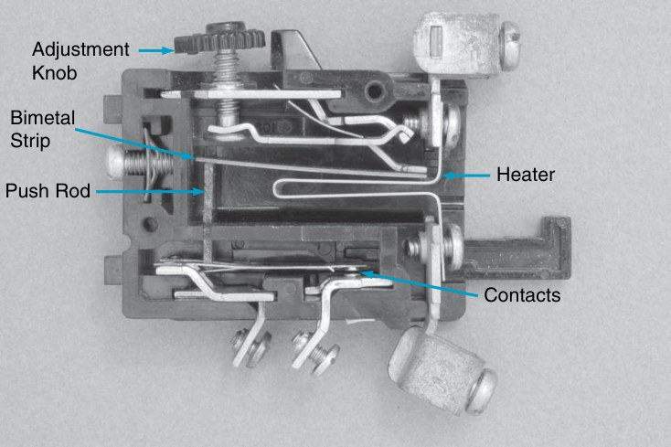
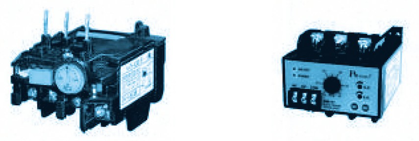
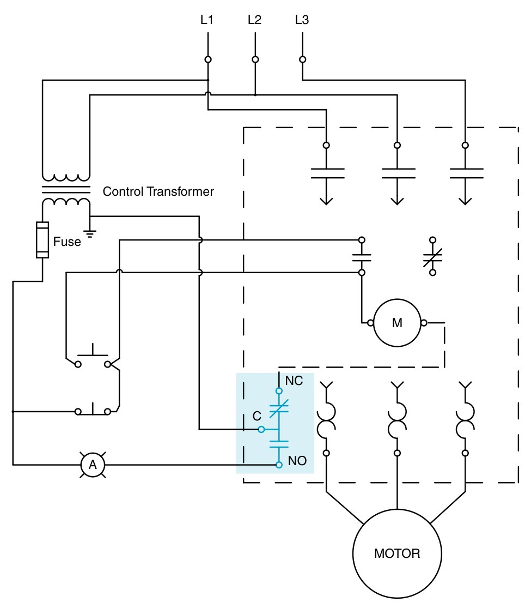

โอเวอร์โหลดรีเลย์ (overload relay) ป้องกันมอเตอร์จากกระแสเกินที่นานพอจะทำให้ขดลวดร้อนจนฉนวนเสื่อม เช่น โหลดหนักเกิน เพลาฝืด หรือไฟขาดเฟส มันยอมให้กระแสเริ่มเดินที่สูง 6–8 เท่าไหลผ่านได้ช่วงสั้น ๆ แต่ถ้ากระแสเกินค่าที่ตั้งนานพอ แผ่นโลหะคู่จะงอจนหน้าสัมผัส 95–96 เปิด ตัดคอยล์คอนแทกเตอร์ มอเตอร์หยุด หน้านี้จำลองความร้อนในโอเวอร์โหลด ให้ลองตั้งค่า เลือกคลาส ให้มอเตอร์โหลดเกิน แล้วจับเวลาจนตัด และต่อหลอดเตือนด้วยหน้าสัมผัส 97–98
An overload relay protects a motor against an overcurrent that lasts long enough to overheat its winding insulation: too heavy a load, a stiff shaft, a lost phase. It lets the 6–8 times starting current through for a short while, but if the current stays above the setting long enough, the bimetals bend until contact 95–96 opens, the contactor coil drops out and the motor stops. This page simulates the heat inside an overload: set it, choose the class, overload the motor and time the trip, and wire a warning lamp to contact 97–98.
รูป 3-19 ของ EMC9 เปิดฝาโอเวอร์โหลดแบบแผ่นโลหะคู่ให้เห็นข้างใน: ขดความร้อน (heater) ที่กระแสมอเตอร์ไหลผ่าน แผ่นโลหะคู่ (bimetal strip) ที่งอเมื่อร้อน ก้านดัน (push rod) ที่ดันหน้าสัมผัสให้เปิด และปุ่มปรับ (adjustment knob) ที่เลื่อนจุดตัด แผ่นโลหะคู่คือโลหะสองชนิดที่ขยายตัวไม่เท่ากันเชื่อมติดกัน เมื่อร้อนจึงโค้งไปทางโลหะที่ขยายตัวน้อย
รูป 3.5 ของตำราไทยคือโอเวอร์โหลดสองแบบที่ใช้ในไทย: (ก) แบบความร้อนที่เสียบใต้คอนแทกเตอร์ด้วยขาทองแดง 3 ขา และ (ข) แบบอิเล็กทรอนิกส์ที่วัดกระแสด้วยหม้อแปลงกระแสในตัว มีปุ่มตั้งค่าและหลอดไดโอดเปล่งแสง (light-emitting diode, LED) การ์ดด้านล่างเป็นภาพถ่ายโอเวอร์โหลดจริงที่เห็นเลข 95 96 97 98 ปุ่ม TEST และ RESET ชัดเจน และเบรกเกอร์ป้องกันมอเตอร์ (MPCB) ซึ่งรวมตัวตัดความร้อนแบบเดียวกันไว้ในเบรกเกอร์
EMC9 Fig. 3-19 opens a bimetal overload: the heater that carries the motor current, the bimetal strip that bends when hot, the push rod that pushes the contact open, and the adjustment knob that moves the trip point. A bimetal is two metals with different expansion bonded together, so heat bends it towards the metal that expands less.
Thai textbook Fig. 3.5 shows the two kinds used in Thailand: (a) a thermal relay that plugs in under the contactor on three copper pins, and (b) an electronic relay that measures the current with built-in current transformers, with a setting dial and light-emitting diodes (LEDs). The cards below show a real overload with 95 96 97 98, TEST and RESET clearly visible, and a motor protective circuit breaker (MPCB), which builds the same thermal release into a breaker.


มอเตอร์ตัวอย่างมีกระแสพิกัด 10 A ตั้งค่าโอเวอร์โหลดและคลาส เลือกภาระของมอเตอร์ แล้วดูเส้นสีส้ม (ความร้อนสะสมในแผ่นโลหะคู่) ไต่ขึ้นหาเส้นประสีแดง ถึงเมื่อไรหน้าสัมผัส 95–96 เปิด มอเตอร์หยุด และ 97–98 ต่อ หลอดเตือนติด เร่งเวลาได้ถึง 60 เท่าเพราะโหลดเกินเล็กน้อยต้องใช้หลายนาที จุดสีส้มบนเส้นโค้งด้านขวาคือเวลาตัดที่คาดไว้ ทุกครั้งที่ตัดหรือรีเซ็ตจะบันทึกลงตาราง
The sample motor has a full-load current of 10 A. Set the overload and its class, choose the motor's load, and watch the orange line (heat stored in the bimetals) climb towards the red dashed line. When it gets there, 95–96 opens, the motor stops, 97–98 closes and the warning lamp lights. Time can run up to 60 times faster, because a small overload takes minutes. The orange dot on the curve at the right is the expected trip time. Every trip and reset is recorded below.
เส้นโค้งการตัดบอกว่ากระแสกี่เท่าของค่าที่ตั้งจะตัดภายในเวลาเท่าไร (เริ่มจากเย็น) แกนทั้งสองเป็นสเกลลอการิทึม กระแส 1.05 เท่าต้องไม่ตัด เส้นโค้งจึงชันขึ้นไปทางซ้าย ส่วนแถบสีที่ 7.2 เท่าคือช่วงเวลาที่มาตรฐานยอมให้แต่ละคลาส
ทำไมต้องเป็น 7.2 เท่า: เป็นระดับประมาณกระแสเริ่มเดินของมอเตอร์ (6–8 เท่า) คลาสจึงบอกว่าโอเวอร์โหลดยอมให้มอเตอร์เริ่มเดินนานแค่ไหนก่อนตัด มอเตอร์ทั่วไปเริ่มเดินไม่ถึง 10 วินาทีใช้คลาส 10 เครื่องที่มีความเฉื่อยมากใช้คลาส 20 หรือ 30
เส้นโค้งในหน้านี้คำนวณจากแบบจำลองความร้อนอย่างง่าย (สมการอันดับหนึ่ง) ที่เลือกค่าให้ผ่านทุกขีดจำกัดของมาตรฐาน เส้นโค้งของรุ่นจริงดูจากแผ่นข้อมูลของผู้ผลิต
A trip curve says how many times the setting trips within what time (from cold). Both axes are logarithmic. 1.05 × must not trip, so the curves rise steeply to the left; the coloured bars at 7.2 × are the time bands the standard allows each class.
Why 7.2 ×? It is about the starting current of a motor (6–8 ×), so the class says how long the overload lets a motor start before it trips. Ordinary motors that start in under 10 s use class 10; high-inertia machines use class 20 or 30.
The curves on this page come from a simple (first-order) heat model tuned to pass every limit of the standard; for a real relay, use the maker's data sheet.
กด S2 ให้มอเตอร์เดิน (หลอดเขียว H1 ติด) แล้วแตะ F2 เพื่อจำลองว่าโอเวอร์โหลดตัด: 95–96 เปิด คอยล์ KM1 หลุด มอเตอร์หยุด 97–98 ต่อ หลอดสีเหลืองอำพัน H2 ติด แตะ F2 อีกครั้งเพื่อรีเซ็ต สังเกตว่ารีเซ็ตแล้วมอเตอร์ไม่เดินเอง ต้องกด S2 ใหม่ เพราะวงจรเป็นแบบ 3 สาย
Press S2 to run the motor (green H1 lit), then tap F2 to simulate an overload trip: 95–96 opens, coil KM1 drops out, the motor stops, 97–98 closes and amber H2 lights. Tap F2 again to reset. Note that the motor does not restart after the reset: S2 must be pressed again, because this is three-wire control.
รูป 3-31 ของ EMC9 คือหลักเดียวกันในแบบอเมริกันของสมาคมผู้ผลิตอุปกรณ์ไฟฟ้าสหรัฐอเมริกา (National Electrical Manufacturers Association, NEMA): โอเวอร์โหลดมีหน้าสัมผัสเปลี่ยนทาง ขาร่วม C ต่อกับด้านที่ต่อลงดินของหม้อแปลงควบคุม ขาปกติปิด NC ต่ออนุกรมกับคอยล์สตาร์ทเตอร์ M ส่วนขาปกติเปิด NO ต่ออนุกรมกับหลอดเตือน A ในแบบ IEC ข้างบน หน้าสัมผัสทั้งสองแยกเป็น 95–96 และ 97–98
EMC9 Fig. 3-31 is the same idea in the American style of the National Electrical Manufacturers Association (NEMA): the overload has a changeover contact; its common C goes to the earthed side of the control transformer, NC is in series with the starter coil M and NO with alarm lamp A. In the IEC drawing above, the two contacts are separate: 95–96 and 97–98.

ป้ายมอเตอร์ 5.5 kW 400 V บอกกระแสพิกัด 11 A ใช้โอเวอร์โหลดคลาส 10 ช่วงปรับ 9–13 A (ก) ต้องตั้งปุ่มที่เท่าไร (ข) ถ้าช่างตั้งไว้ 13 A "เผื่อไว้" แล้วมอเตอร์ทำงานที่ 12.5 A ตลอด โอเวอร์โหลดจะตัดไหม มอเตอร์จะเป็นอย่างไร (ค) มอเตอร์ติดขัดกินกระแส 7.2 เท่าของค่าที่ตั้งในข้อ (ก) โอเวอร์โหลดต้องตัดภายในกี่วินาที
A 5.5 kW 400 V motor has a nameplate full-load current of 11 A. The overload is class 10 with a 9–13 A range. (a) Where must the dial be set? (b) If an electrician sets it to 13 A "to be safe" and the motor runs at 12.5 A all day, will the overload trip, and what happens to the motor? (c) If the motor jams and draws 7.2 times the setting of (a), within how many seconds must the overload trip?